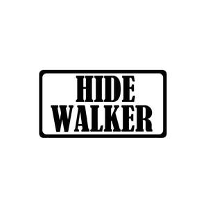

Trade Mark Journal No.2026/005 30 January 2026
UK00004293378 12 November 2025 (8,18,20,21,22,27,28,35)

- Class 8
- Fish forks; Metal vices; Scissors; Boxes for cutlery [fitted]; Hammers, mallets and sledgehammers; Cutters; Hand pumps; Knives, forks and spoons; Screw spanners [wrenches]; Scrapers; Saw blades; Spanners; Hair clippers; Shovels; Vegetable peelers, hand-operated; Abrasive tools (Hand-operated-）; Lifting tools; Agricultural, gardening and landscaping tools; Fastening and joining tools; Hand tools for construction, repair and maintenance.
- Class 18
- Backpacks; Umbrellas; Hiking sticks; Harness straps; Bags for umbrellas; Bags; Travelling sets; Reusable shopping bags; Tool bags, empty; Bags made of leather; Bags (Net -) for shopping; Reins; Collars for animals; Handbags, purses and wallets; Animal apparel; Handles (Walking stick -); Straps for luggage; Key cases; Blinders [harness]; Business card cases.
- Class 20
- Hanging closet organizers; Moldings for picture frames; Figurines of wood, wax, plaster or plastic; Door fittings, not of metal; Dog kennels; Trays, not of metal; Chests, not of metal; Typing desks; Corks for bottles; Trolleys [furniture]; Trestles [furniture]; Clothes hooks, not of metal; Birdhouses; Door bells, not of metal, non-electric; Household furniture; Hooks for towels (Non-metallic-）; Countertops [furniture parts]; Bungs (Non-metallic -) for tubs; Works of art of wood, wax, plaster or plastic; Pipe fasteners, connectors and holders, non-metallic.
- Class 21
- Articles for cleaning purposes; Baking utensils; Cooking pot sets; Shoe brushes; Cosmetic utensils; Tea services [tableware]; Kitchen containers; Kitchen utensils; Lazy susans; Kitchen mitts; Indoor aquaria; Heat-insulated containers; Soap boxes; Spice shakers; Coolers [ice pails]; Indoor terrariums for insects; Indoor terrariums for plants; Flasks; Raised garden planters; Stirrers.
- Class 22
- Glass fibers for textile use; Fishing nets; Dust sheets; Awnings of textile; Nets for camouflage; Hammocks; Groundsheets; Grow tents; Tents; Nets; Ropes; Dust covers; Tarpaulins of sailcloth; Laundry bags; Sails; Straw wrappers for bottles; Tarpaulins; Wadding for filtering; Feathers for bedding; Padding materials, other than of rubber or plastic for sleeping bags.
- Class 27
- Yoga mats; Wallpaper; Tatami mats; Non-slip mats; Linoleum; Gymnastic mats; Floor coverings; Door mats; Carpets for automobiles; Bath mats; Artificial turf; Reed mats; Decorative wall hangings, not of textile; Floors coverings of rubber; Linoleum for use on floors; Mats; Rugs; Floor mats, fire-resistant, for fireplaces and barbecues; Floor coverings having insulating properties; Cork mats.
- Class 28
- Nets for sports; Machines for physical exercises; Lures for hunting or fishing; Knee guards [sports articles]; Fishing tackle; Fencing masks; Fencing gloves; Exercise weights; Elbow guards [sports articles]; Swimming jackets; Toys for pets; Balls for games; Yoga swings; Body-training apparatus; Flying discs; Ornaments for Christmas trees, except lights, candles and confectionery; Pitch mark repair tools [golf accessories]; Rackets; Fitted protective covers specially adapted for skis; Goal nets .
- Class 35
- Website traffic optimization; Web indexing for commercial or advertising purposes; Updating of advertising material; Publication of publicity texts; Publicity; Outdoor advertising; Media relations services; Marketing; Layout services for advertising purposes; Dissemination of advertising matter; Demonstration of goods; Conducting of commercial events; Compiling indexes of information for commercial or advertising purposes; Advertising; Wholesale services relating to sporting goods; Promotional and advertising services; Administration relating to marketing; Writing of publicity texts; Online advertising on a computer network; Providing user rankings for commercial or advertising purposes.
Xiamen Hide Walker Trading Co., Ltd.
Representative: IPP Master Limited